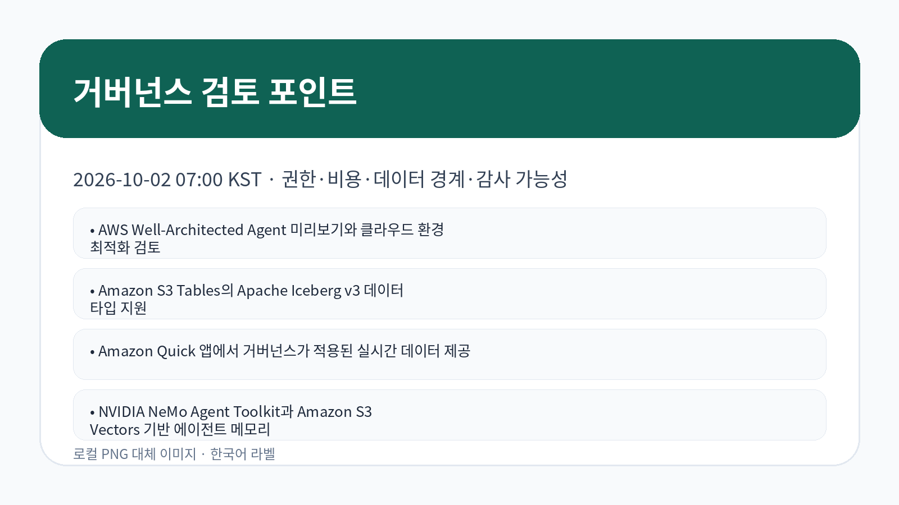

AI/ML · AWS 뉴스 블로그
AWS Well-Architected Agent 미리보기와 클라우드 환경 최적화 검토
AWS Well-Architected Agent가 클라우드 환경 최적화를 돕는 AI 기반 지능형 기능으로 미리보기 공개되었습니다.
검토 포인트: 기업은 권고 자동화의 편의성보다 계정 접근 권한, 변경 승인, 권고 근거 추적, 비용 영향 검증을 함께 설계해야 합니다.
원문 보기이번 실행에서 신규 저장·동기화한 AWS 공식 블로그 9건을 기준으로 작성했습니다.

이번 실행에서는 에이전트 최적화, 데이터 테이블 포맷, 실시간 거버넌스 데이터, 에이전트 메모리, 대시보드 탐색, 모델 맞춤화가 함께 확인되었습니다. 공통 검토 축은 권한, 비용, 데이터 경계, 지연시간, 감사 가능성입니다.
AI/ML · AWS 뉴스 블로그
AWS Well-Architected Agent가 클라우드 환경 최적화를 돕는 AI 기반 지능형 기능으로 미리보기 공개되었습니다.
검토 포인트: 기업은 권고 자동화의 편의성보다 계정 접근 권한, 변경 승인, 권고 근거 추적, 비용 영향 검증을 함께 설계해야 합니다.
원문 보기Data/Analytics · AWS 뉴스 블로그
Amazon S3 Tables가 Apache Iceberg v3 데이터 타입을 지원해 분석 테이블 호환성과 데이터 모델링 선택지가 확대되었습니다.
검토 포인트: 데이터 플랫폼 조직은 Iceberg 버전 호환성, 쿼리 엔진 지원 범위, 스키마 변경 통제와 비용 영향을 함께 검토해야 합니다.
원문 보기AI/ML · AWS 머신러닝 블로그
Amazon Quick 기반 앱에서 통제된 실시간 데이터를 제공하는 패턴이 확인되었습니다.
검토 포인트: AI 앱이 운영 데이터에 접근할 때는 권한 상속, 데이터 최신성, 승인된 지표 정의, 사용자별 접근 범위가 의사결정의 핵심입니다.
원문 보기AI/ML · AWS 머신러닝 블로그
NVIDIA NeMo Agent Toolkit과 Amazon S3 Vectors를 활용한 에이전트 메모리 구축 방식이 제시되었습니다.
검토 포인트: 에이전트 메모리는 검색 품질뿐 아니라 벡터 저장 위치, 보존 기간, 삭제 정책, 개인정보 포함 여부를 함께 통제해야 합니다.
원문 보기AI/ML · AWS 머신러닝 블로그
AWS 기반 contextual bandits를 활용해 획득 퍼널 전반의 개인화와 전환 개선을 다룬 사례가 확인되었습니다.
검토 포인트: 개인화 실험은 성과 지표와 함께 편향, 고객 동의, 실험군 통제, 장기 효과 측정을 병행해야 합니다.
원문 보기AI/ML · AWS 머신러닝 블로그
이벤트 신호에서 사람 승인 단계까지 이어지는 ambient agent 워크플로가 Amazon Bedrock AgentCore로 제시되었습니다.
검토 포인트: 자동 실행형 에이전트는 트리거 조건, 사람 승인 기준, 실패 시 롤백, 감사 로그 보존을 배포 전 기준으로 정해야 합니다.
원문 보기Compute/Serverless · AWS 머신러닝 블로그
AWS에서 Claude 플랫폼을 여러 환경으로 분리해 접근시키는 구현 패턴이 확인되었습니다.
검토 포인트: 다중 환경 접근은 개발·검증·운영 권한 분리, IAM 정책, 비밀정보 관리, 네트워크 경계를 함께 설계해야 합니다.
원문 보기Data/Analytics · AWS 머신러닝 블로그
Amazon Quick Sight의 계층 필터를 활용해 대시보드 드릴다운 경험을 단순화하는 방법이 확인되었습니다.
검토 포인트: 분석 대시보드는 탐색 편의성뿐 아니라 지표 정의 일관성, 권한별 데이터 노출, 성능 영향을 함께 검토해야 합니다.
원문 보기AI/ML · AWS 머신러닝 블로그
Uniopen이 리테일 검수 정책에 맞춰 Amazon Nova를 조정하고 운영 배포한 사례가 확인되었습니다.
검토 포인트: 모델 맞춤화는 정확도 향상뿐 아니라 정책 변경 관리, 검수 기준 문서화, 오탐·미탐 책임, 운영 모니터링을 포함해야 합니다.
원문 보기| 기사 | 게시 | 카테고리 |
|---|---|---|
| AWS Well-Architected Agent 미리보기와 클라우드 환경 최적화 검토 | 2026-10-02 | AI/ML |
| Amazon S3 Tables의 Apache Iceberg v3 데이터 타입 지원 | 2026-10-01 | Data/Analytics |
| Amazon Quick 앱에서 거버넌스가 적용된 실시간 데이터 제공 | 2026-10-02 | AI/ML |
| NVIDIA NeMo Agent Toolkit과 Amazon S3 Vectors 기반 에이전트 메모리 | 2026-10-02 | AI/ML |
| AWS의 contextual bandits 기반 개인화와 전환율 개선 사례 | 2026-10-02 | AI/ML |
| Amazon Bedrock AgentCore 기반 ambient agent와 human-in-the-loop 워크플로 | 2026-10-02 | AI/ML |
| AWS에서 Claude 플랫폼 다중 환경 접근 구현 | 2026-10-02 | Compute/Serverless |
| Amazon Quick Sight 계층 필터로 대시보드 드릴다운 단순화 | 2026-10-02 | Data/Analytics |
| Uniopen의 Amazon Nova 기반 리테일 검수 정책 맞춤화 사례 | 2026-10-02 | AI/ML |
AgentCore, S3 Tables, Quick, S3 Vectors, Amazon Nova 항목은 AI 적용과 데이터 계층 설계가 더 긴밀히 연결되고 있음을 보여줍니다. 기업은 기능 발표를 곧바로 도입 판단으로 연결하지 말고 원문 조건과 내부 통제 기준을 함께 검토해야 합니다.
AI 에이전트와 분석 서비스는 데이터 접근권한과 결과 검증 책임을 분리하기 어렵습니다. 따라서 사용 시나리오, 보안 통제, 관측 가능성, 비용 구조를 먼저 정의하는 방식이 안전합니다.
국내 기업은 글로벌 사례의 아키텍처를 그대로 복제하기보다 개인정보, 감사, 계약상 데이터 위치 요건을 원문 조건과 대조해야 합니다. 원문만으로 비용·성능 수치가 확인되지 않는 부분은 확인 필요로 남기는 것이 적절합니다.
에이전트와 모델 맞춤화 항목은 승인 절차, 최소 권한, 로그 보존, 오류 대응 책임을 함께 문서화해야 합니다. 데이터·분석 항목은 스키마 변경, 쿼리 비용, 권한별 노출 범위를 별도 통제해야 합니다.
관찰된 사실: AWS Well-Architected Agent가 클라우드 환경 최적화를 돕는 AI 기반 지능형 기능으로 미리보기 공개되었습니다.
근거 출처 URL: 원문 링크
기업 의사결정 시사점/리스크/기회: 기업은 권고 자동화의 편의성보다 계정 접근 권한, 변경 승인, 권고 근거 추적, 비용 영향 검증을 함께 설계해야 합니다.
관찰된 사실: Amazon S3 Tables가 Apache Iceberg v3 데이터 타입을 지원해 분석 테이블 호환성과 데이터 모델링 선택지가 확대되었습니다.
근거 출처 URL: 원문 링크
기업 의사결정 시사점/리스크/기회: 데이터 플랫폼 조직은 Iceberg 버전 호환성, 쿼리 엔진 지원 범위, 스키마 변경 통제와 비용 영향을 함께 검토해야 합니다.
관찰된 사실: Amazon Quick 기반 앱에서 통제된 실시간 데이터를 제공하는 패턴이 확인되었습니다.
근거 출처 URL: 원문 링크
기업 의사결정 시사점/리스크/기회: AI 앱이 운영 데이터에 접근할 때는 권한 상속, 데이터 최신성, 승인된 지표 정의, 사용자별 접근 범위가 의사결정의 핵심입니다.
관찰된 사실: NVIDIA NeMo Agent Toolkit과 Amazon S3 Vectors를 활용한 에이전트 메모리 구축 방식이 제시되었습니다.
근거 출처 URL: 원문 링크
기업 의사결정 시사점/리스크/기회: 에이전트 메모리는 검색 품질뿐 아니라 벡터 저장 위치, 보존 기간, 삭제 정책, 개인정보 포함 여부를 함께 통제해야 합니다.
관찰된 사실: AWS 기반 contextual bandits를 활용해 획득 퍼널 전반의 개인화와 전환 개선을 다룬 사례가 확인되었습니다.
근거 출처 URL: 원문 링크
기업 의사결정 시사점/리스크/기회: 개인화 실험은 성과 지표와 함께 편향, 고객 동의, 실험군 통제, 장기 효과 측정을 병행해야 합니다.


이미지 프롬프트 1: AWS 공식 블로그 신규 수집 현황을 한국어 기업 브리핑 스타일로 요약하는 카드형 시각 자료.
이미지 프롬프트 2: 에이전트와 데이터·분석 변화 신호를 한국어 카드형 인포그래픽으로 표현하는 시각 자료.
이미지 프롬프트 3: 권한, 비용, 데이터 경계, 감사 가능성 중심의 거버넌스 검토 포인트를 표현하는 시각 자료.